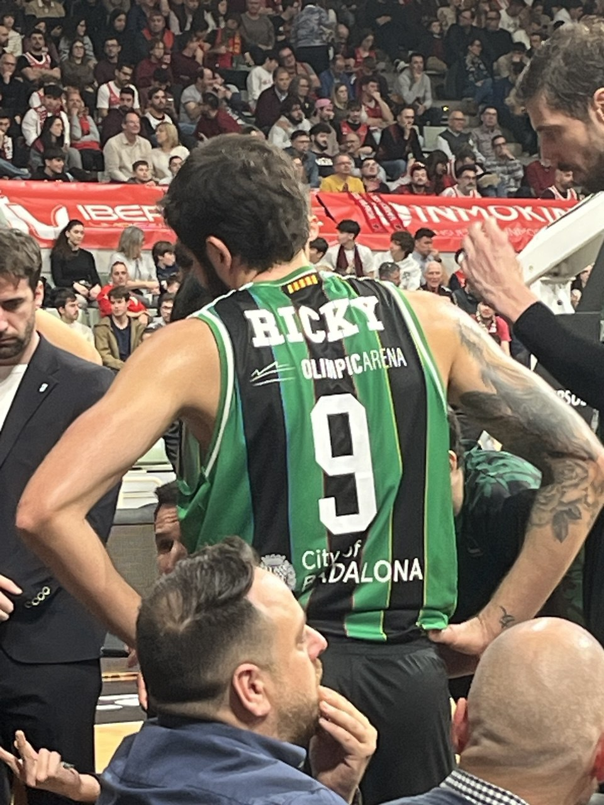
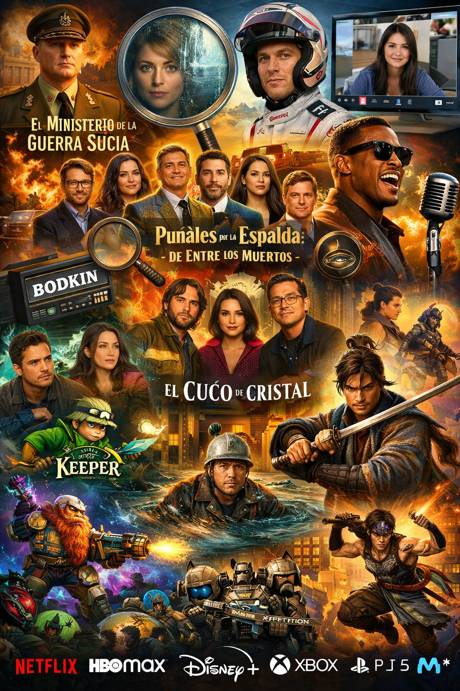
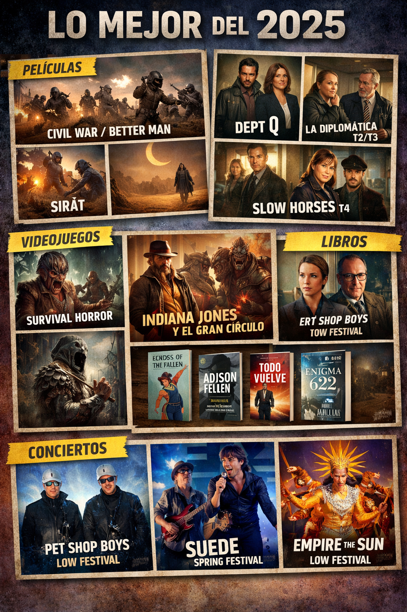

Llegamos al Oasis¶
Fin de la primera evaluación. Hace algo más de un mes yo era un hombre en el desierto. Caminando bajo el sol buscando agua y sombra...
A veces iba solo y en otras algún compañero estaba conmigo. Las evaluaciones son esas dunas que hay que subir, con esfuerzo y sin pausa. Corregir, evaluar, reflexionar. Después de la duna, otra llanura llena de arena. Necesito agua. Y sí, un oasis en el horizonte. ¿Será real? ¿Llegarán las vacaciones?
Con cada paso, parecía que estaban más lejos. ¿Eran imaginarias? Por suerte, llegó el día 22 y todo se vuelve de color y alegría. Bueno, no nos pasemos. Tampoco estamos tan mal trabajando. ¿O sí? Es muy Mr Wonderful decir que trabajas en lo que te gusta. Pero, realmente, si no te pagasen, ¿irías a trabajar? Igual no te gusta tanto el trabajo. Yo iría a almorzar ;)
Acompañadme en esta reflexión, siguiendo con un pequeño resumen de las últimas semanas y finalmente una recapitulación de este 2025 que ya acaba.
EOI¶
Revisando la entrada de hace justo un año, cuando estaba mentalmente agotado, pensaba tomarme un año sabático tras aprobar el C2 de valenciano.
Y aquí me tenéis, con el C1 de inglés a tope. Y cuando digo a tope, me refiero a que ha adelantado por la izquierda a las series y los videojuegos. Me gusta aprender inglés.
Además de las muchas actividades que hacemos en clase y las que nos mandan para casa, a veces, complemento con fichas para refrescar lo que aparentemente debería saber ya. Hace más de 25 años que dejé de estudiar inglés, y aunque he seguido leyendo y escuchando algún podcast y vídeos de informática en inglés, me noto que a la hora de hablar, dudo. Pero bueno, en ello estamos.
Fuerza¶
Cuando pasas de largo de los cuarenta, la frase recurrente es que hay que hacer ejercicio. ¡Debes entrenar fuerza! Como si fuera un mantra apostólico que hay que seguir a pies juntillas.
Tras cuatro meses de entrenamiento, la verdad, es que me encuentro mucho mejor. Se acabaron los dolores de espalda y cervicales. La rodilla duele menos (estos días de lluvia se ha hecho notar). El hombro va mejorando y mucho. Pese a las molestias, tengo mucha más movilidad y noto como cada semana estoy un poco mejor.
Estos días vacacionales he corrido, de nuevo, la San Silvestre de Vergel con Andreu. Ya es una tradición familiar, además de una meta personal. Así me obligo a que el cuerpo aguante 30 minutos corriendo, sin parar. Hace un par de semanas hice una prueba y todo bien. Llegué vivo y los dolores sólo duraron un par de días. Se nota que las piernas están más fuertes y que la fuerza (sic) me acompaña. En la carrera, todo en orden. 2,7km en 20:30 minutos. Andreu creo que ni sudó ... bendita juventud.
Si cambiamos la fuerza física por la mental, esta es más dificil de trabajar. Sigo haciendo progresos, intentando no abarcar más de lo que puedo. Hace un mes surgió un proyecto de innovación para realizar en IABD, y esta vez, me quedé al margen para qué otros compañeros lo liderasen. Al final la cabra tira al monté y eché una mano, pero debo tirar menos del carro y más acompañar. Cuando echo la vista atrás y reflexiono sobre cuándo creo que estuve mejor mentalmente, fue allá por el año 2021, cuando dejé la jefatura y estuve un curso sin ningún tipo de responsabilidad. Igual fue una utopía. Puede que de haber seguido así me hubiéra aburrido y desmotivado de la informática. Pero me vino muy bien. Entiendo que ahora mismo no puedo tomar la misma decisión. Es más, no me quiero trasladar y volver a empezar de cero. Hace un año, con el mal rollo que tuve en el centro, lo pensé seriamente. Hay gente muy válida y a la que aprecio mucho que no quiero perder, y estar tan cerca de casa es otro plus. Me quedan algo más de diez años en la docencia (si me dejan prejubilarme) y creo que estoy en el sitio correcto.
Por momentos, me gustaría que mis problemas de estómago no repercutieran en mi estado nervioso, y lo que es peor, cuando es al revés, y mi estado nervioso repercute en mi salud física. Así no me influirían tanto las injusticias o malas acciones que he vivido. Podría ayudar mucho más en el IES. Podría haber ayudado mucho más y habernos ahorrado varios malos rollos.
Bases de Datos¶
En cuanto a los módulos, las últimas semanas estuve pensando y mucho en cómo impartir el módulo. 2025 ha sido la consolidación de los LLMs, y el alumnado lo sabe. No vale para nada enviar deberes para casa. Repito, no vale para nada. Al final, incluso el alumnado más responsable acaba utilizándola, y entrega algo que no es una representación real de su estado de aprendizaje. Lo digo con conocimiento de causa. Yo mismo para la EOI, tras hacer los deberes, compruebo si lo he hecho bien. Y no para "engañar" a la profe, sino porque cuanto antes obtengo el feedback de lo que estoy aprendiendo, más significativo es ese aprendizaje.
Y hay otra pequeña diferencia. En la EOI los deberes son opcionales, no se evalúan, y yo sí que los evalúo. ¿Error por mi parte? Puede ser. Creo que ya he dicho varias veces que la idea es hacer todos los deberes en clase y no mandar nada para casa, pero es que a veces, incluso con avisos, el alumnado en clase acaba usando cualquier IA para ahorrarse hacer el trabajo.
Luego está el mal sabor de boca de tener la sensación de estar perdiendo el tiempo. Si el alumnado hace los deberes con la IA, ¿vale la pena que yo le dedique tiempo corrigiéndolos? ¿Se lo paso a una IA que corrija a otra IA? ¿Le damos luego el título a la IA o al alumn@?
De momento, para la siguiente evaluación, con la excusa de que comenzamos el bloque de consultas, voy a probar a no evaluar muchas de las actividades que hagamos. Mi idea es seguir con la misma dinámica, de hacer las actividades en el aula, pero sólo al final de la clase les diré si la deben entregar o no. Tengo que pensar bien qué actividades no evaluar porque no quiero dejarme ningún criterio de evaluación sin cubrir, pero a malas, siempre puedo hacerlo en la prueba objetiva. Así, por un lado, podré mandar deberes para casa, y quien quiera, que los haga. Todo lo que sea para casa será no evaluable. Por otro lado, los exámenes de toda la vida se llevan casi todo el peso de la evaluación. A la antigua usanza. Papel y lápiz. Pedagógicamente no será la mejor decisión pero, hasta que consigamos una convivencia beneficiosa en los dos sentidos con la IA, permite separar el grano de la paja.
Para cerrar el bloque, respecto a contenidos puros de BD, si saco tiempo me gustaría ampliar algún apartado de los consultas, profundizando mucho más en las funciones ventana o las tabla pivote de PostgreSQL.
IABD¶
A nivel de contenido, poco que contar. El bloque de NoSQL se tuvo que adelgazar por la incorporación "forzada" de un proyecto con AWS Bedrock que teníamos que hacer antes de finalizar el año.
Como aspecto positivo, este curso hacemos PIIAFP todos los Viernes. Nada de viernes alternos. Eso sí, sin deberes para casa. Está creando muy buenas dinámicas en el aula, y estamos avanzando más. Mucha metodología activas, el alumnado siempre protagonista, pero requiere de más tiempo de preparación que si fuera una clase tradicional. Todos los jueves nos reunimos Robledano y yo y organizamos en detalle la sesión. Si bien tenemos una big picture de lo que queríamos conseguir en el primer trimestre, el detalle lo hemos ido definiendo semana a semana conforme hemos visto el nivel y las carencias del alumnado.
De Lara, el alumnado ya ha conseguido realizar modificaciones sobre la aplicación de captura, conoce el modelo de datos de cómo se almacena la información y el motivo de dicha organización, ha creado un dataset a partir de dichos datos y realizado un EDA para identificar, a priori, qué datos nos pueden interesar más. Luego, un fine-tuning sobre Whisper y un prototipo con Gradio para probar el modelo entrenado. Puede parecer mucho o poco, según se mire, pero ya tienen una visión completa del proyecto. Volveremos a él en Abril.
A la vuelta comenzamos con el Hidrógeno Verde y la Colemna Inteligente. IoT, Node-RED, series temporales, InfluxDB, cuadros de mandos, etc... Tenemos también la big picture, nos falta concretar qué pasos hacer cada viernes. Os mantendré informados.
No todo es trabajar¶

Las últimas semanas han dado mucho de si. Para empezar, baloncesto. Y del bueno. Cuando me enteré que Ricky Rubio volvía a las pistas, me propuse que tenía que ir con Andreu a verlo en directo. El día que se ponían las entradas a la venta estuve avispado y conseguí dos asientos en primera fila en Murcia. El UCAM este año está muy fuerte, y pese a que Ricky empezó el partido muy bien, acabó un poco desquiciado de la defensa.
Y como colofón, ayer nos fuimos a Valencia a ver nuestro primer partido de Euroliga. Todo un Valencia Basket vs Partizan de Belgrado. Las entradas han salido por un ojo de la cara, además de tener que molestar a amigos de amigos para ver si conseguíamos acceder a la venta durante los días reservados para los abonados. Partidazo es poco. En el camino de ida íbamos los dos emocionados con la ocasión. El Roig Arena es más que espectacular. ¡Qué ambiente! Un partidazo en toda regla, muy dinámico y con un Partizan correoso. Cameron Payne en la rueda de calentamiento nos dejó con la boca abierta. Pero Montero y Darius Thompson son un dúo top, qué manera de jugar y romper el partido.
Si hablamos de música, este invierno, cero conciertos. Han salido las primeras confirmaciones de artistas, y de momento, nada realmente interesante para el Spring, para el Low (que se traslada a Torrevieja) sólo me llaman The Hives. Así pues, bicheando por internet, puede que haga una escapada el primer finde de mayo, al menos un día, a Murcia al WarmUp para ver a Soulwax y Fatboy Slim (a ver si consigo engañar a algún colega).
En cuanto al ocio digital, para hacerlo más conciso y en forma de lista, lo más destacable:
- Cine: Comenzamos con varias pelis reseñables, como la graciosa visión de Guy Ritchie de un grupo secreto británico en la II guerra mundial en El ministerio de la guerra sucia (Prime Video), el pequeño bluff de La mujer del camarote 10 (Netflix), la sorprendente juventud de Bradd Pitt en la entretenida F1 (Apple TV), o el original enfoque de la webcam en Missing (HBO Max). Acabamos el año con dos pelis más que notables, el whodunnit de Puñales por la espalda: De entre los muertos (Netflix), y la gran Ray (Movistar+), biopic del genio Ray Charles con un Jamie Foxx espectacular.
- Series: para empezar, la grata sorpresa de Pubertat (HBO Max) que, con cierto parecido a Adolescencia, nos traslada el problema generacional existente que tenemos los boomers con los adolescente, el uso del móvil y las relaciones personales y sexuales. Seguimos con el n-ésimo thriller español sobre una novela de Javier Castillo, El cuco de cristal (Netflix), el podcast sobre un misterio sin resolver en Bodkin (Netflix). Con mi hijo hemos disfrutado de la quinta temporada Sólo asesinatos en el edificio (Disney+)
- Videojuegos: Como juegos acabados, dos cortitos. Terminé la colorida aventura de Keeper (Xbox), que deja un buen sabor de boca, y justo el día antes de salir de GamePass terminé Still Wakes the Deep (Xbox). He seguido picando piedra en Deep Rock Galactic: Survivor (Xbox), por fin, estas navidades, estoy a tope con Expedition 33. Por último, estoy a punto de terminar Rise of the Ronin (PS5) que ya le he cogido el timing a los combates y es un poco como comer pipas, y le di bastante a Rogue of Prince of Persia que me está gustando mucho pero se me hizo bola un jefe y lo tengo medio apartado, para cuando acabe con Expedition 33.
Igual que el mes pasado, os dejo con un resumen gráfico del ocio digital gentileza de ChatGPT :)

Ah, se me olvidaba la lectura. Hace un par de días me acabé Todos en mi familia todos han matado a alguien, de Benjamin Stevenson, un whodunnit curioso, con toques de humor negro que se deja leer. Si os animáis, anotad en una libreta el nombre y la relación de los personajes... me hubiera venido bien, ya que a veces no sabía si hablaba de la ex, la hermana, la cuñada o la jefa. Tiene una secuela que la dejaré para el verano, Todos en este tren son sospechosos.
Adiós 2025¶
Resumen rápido de cosas memorables de este año que ya termina:
- El Plan. Dos años de mucha dedicación pero una gran recompensa. Dos grandes profesionales. Dos grandes opositores. Dos profes que dimos lo mejor de nosotros para formar a dos personas que confiaron en nosotros.
- El C2 de Valenciano. Me autoimpuse una presión innecesaria, pero al final, objetivo cumplido.
- Conciertazos. Pet Shop Boys, irrepetible.
- Mucho baloncesto y bueno. Ricky Rubio. Un UCAM que defiende con los dientes. Un Valencia Basket líder en Euroliga, al lado de mi hijo. Y el Hélike Bàsquet ... amigos de Andreu para toda la vida.
- Cazorla con amigos. Da igual las veces que vayamos que siempre es un acierto. ¡Y el burro!
- Nunca un viaje de trabajo fue tan positivo (y divertido) como unos días en Mérida dentro del marco del proyecto Lara.
- Y para terminar, el viaje a Bélgica. Gante es un sitio ideal para ser joven de nuevo.
Según mi hija, ahí va mi vision board en modo texto. Para terminar de despedir el año, os comparto mis objetivos para el 2026:
- Terminar los PIIAFP por la puerta grande. Tanto Lara como el Hidrógeno Verde se merecen un cierre a la altura.
- Superar el 1C1 de Inglés en la primera convocatoria.
- Seguir con el preparador físico, hombro y cuadriceps. Objetivo: poder correr 30 minutos sin molestias a menos de 6 minutos el km.
- Viajar este verano y visitar con la familia a mi gran amigo Rubén.
- Leer, leer y leer. ¿Sería muy ambicioso si me marco como objetivo 9 novelas?
- Cine, cine y cine. Volveremos al reto de las 100 películas / miniseries.
- Disfrutar de algún conciertazo ¿Spring? ¿WarmUp? ¿Low? ¿MadCool?
Top 2025
No se puede despedir un año sin hacer un resumen rápido a mi top 2025. 3 de cada. 3 pelis, 3 series, 3 videojuegos, 3 libros. Sin orden concreto.

Pelis:
- Civil War - Better Man
- Sirât
- Superman - Los cuatro fantásticos
Series:
- Dept Q
- La diplomática (T2 y T3)
- Slow Horses (T4)
Videojuegos:
- Resident Evil 2
- Indiana Jones y el Gran Círculo
- Lords of the Fallen
Libros:
- Em diuen Fletxa, Joan Ventura
- Todo vuelve, Juan Gómez-Jurado
- El enigma de la habitación 622, Joël Dicker
Conciertos:
- Pet Shop Boys - Low Festival
- Suede - Spring Festival
- Empire of the Sun - Low Festival
Lo que está por venir¶
Si has llegado hasta aquí, sólo me queda felicitarte el año nuevo y que este 2026 sea un buen año. Seguro que sí. Nos leemos en breve.